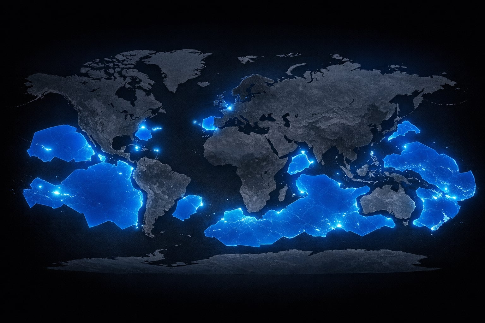

← Soara

France
St-Pierre-et-Miquelon
Guadeloupe
Martinique
Guyane
Clipperton
Polynesie francaise
Nouvelle-Caledonie
Wallis-et-Futuna
La Reunion
Mayotte
Kerguelen
Crozet
St-Paul/Amsterdam
Soara · Grand format · Géopolitique maritime
La France que vous
ne connaissez pas
Appuyer pour commencer · 6 chapitres
Territoire / ZEE français
‹
▶
›
1 / 6